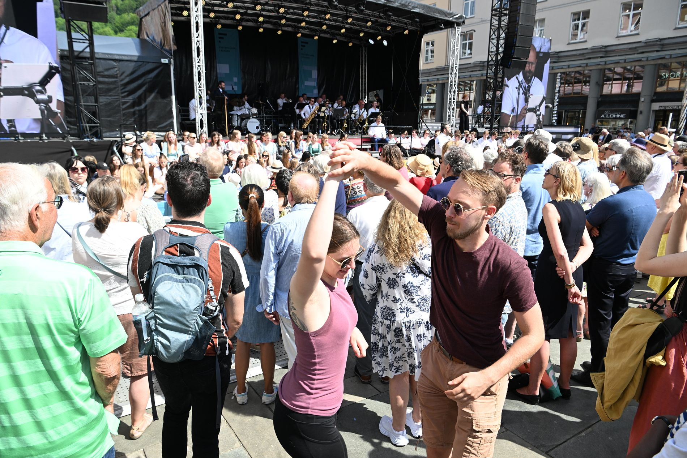

Nå skal det koke i en måned. Slik kan du ta del i festen.
Nå skal det koke i en måned. Slik kan du ta del i festen.
Bergens Tidende (bt.no)

Festspill, Nattjazz, Pride, Bergenfest og invasjon av både striler og buekorps. Bergen går inn i festivalsesongen med et brak.
17. mai og pinsen er nettopp unnagjortunnagjort · done and over with · from unna "away" + gjort "done" (ON). Nå starter festivalsesongen i Bergen. De neste ukene skal det koke både i byens gater og kultursaler.
Som skuespiller Vidar Magnussen sa i 2024:
– Det skjer noe med bergensere når solen kommer. Vanlige nordmenn går i dvaledvale · hibernation · from ON dvali "sleep, trance", men bergensere, vi har ikke dvaleknapp!
Festspill, Nattjazz, Pride, Bergenfest og invasjon av både striler og buekorps. Bergen går inn i festivalsesongen med et brak.
Her er noe av det man kan se frem til, og tips til å oppleve stemningenstemning · the atmosphere, mood · from German Stimmung "mood, tuning" selv om man ikke er betalende tilskuertilskuer · spectator · from til "to" + skue "to look" (ON skuggja).
Festspillene i Bergen
Hva: Festspillene i Bergen · Når: 27. mai–10. juni · Hvor: Mange arenaer
Det er 74. gang Bergen inviterer til landets største festspill. Det betyr musikk, teater, dans og kunst i saler og innendørsarenaerinnendørsarena · indoor venues · innen "inside" + dør "door" (ON dyrr) + arena (Latin) i 15 dager. Men Festspillene har også et stort utendørsprogram som mange vil oppsøke eller legge merke til, spesielt hvis de passerer Torgallmenningen.
Der kan man se åpningsseremonien onsdag. Deretter rigges den også i år om til en «Festallmenning», med scene, interaktive leker og et stort antall gratisarrangementer.
Putekrig og dans, performance med Lars Vaular, pubkor, vandreteatervandreteater · walking theatre, promenade theatre · vandre "to walk" (MLG wanderen) + teater (Greek theatron) og mystiske «fløffer» er noe av det Festspillene lokker med.
I fjor hadde Festspillene 70.000 besøkende, rundt halvparten av dem på utendørsarrangementene.
Nattjazz
Hva: Nattjazz · Når: 29. mai–6. juni · Hvor: USF Verftet
Festspillenes yngre søsterarrangementsøsterarrangement · sister event · søster "sister" (ON systir) + arrangement (French) foregår som vanlig på USF Verftet. Her blir det åtte kvelder tettpakkettettpakket · tightly packed · tett "tight, dense" (ON þéttr) + pakket "packed" med konserter – og en med poesi.
Åpningskvelden arrangeres det gratiskonsert med Kjetil Møster og Bergen Big Band i Hallen på USF, men billettene må hentes ut på forhånd.
Kvelden etter er det allerede utsolgt, med Susanne Sundfør og Bugge Wesseltoft som hovedattraksjoner.
For mange er nok uteserveringenuteservering · the outdoor seating/terrace · ute "outside" + servering "serving" (Latin servīre) med utsikt mot Puddefjorden den aller største attraksjonen. I fjor registrerte Nattjazz rundt 22.000 besøk.
Regnbuedagene / Bergen Pride
Hva: Regnbuedagene/Bergen Pride · Når: 29. mai–6. juni · Hvor: Flere arenaer, deriblant Kvarteret, Nygårdsparken og Marinehagen.
Regnbuedagene har blitt arrangert i mange år i Bergen. Arrangementet er mest kjent for den fargerike og populære paradenparade · the parade · from French parade, ultimately from Latin parāre "to prepare" gjennom sentrum på avslutningsdagenavslutningsdag · the closing day · avslutning "conclusion" (ON slúta "to end") + dag "day". I fjor deltok titusenvistitusenvis · tens of thousands · ti "ten" + tusen "thousand" (ON þúsund) + -vis "in groups of" i paraden i nydelig sommervær. I år går paraden 6. juni.
Men før det skal det være blant annet politiske debatter og kulturinnslag på «Pride House» på Kvarteret, og en tre dagers fest i Pride Park i Nygårdsparken. Det hele rundes av med festen Regnbuenatt på Marinehagen.
Buekorpsenes Dag
Hva: Buekorpsenes Dag · Når: 30. mai · Hvor: Torgallmenningen og hele sentrum
Det skjer bare hvert fjerde år. Men da er det umulig å ikke legge merke til.
– Dette er større enn 17. mai, ble det slått fastslå fast · stated firmly, established · slå "to strike" (ON slá) + fast "firm" i 2022.
Buekorpsenes Dag er olympiske leker for alle som går i buekorps, og ikke minst alle som har gått i buekorps.
Det er dagen da gamlekarene og -damene finner frem finstasen, pusser medaljene og viser frem gamle kunster.
Tusenvis av marsjerende og trommende gjennom sentrum lager et høytidelighøytidelig · solemn, ceremonial · høy "high" + tid "time" (ON hátíð "festival") spetakkelspetakkel · spectacle, commotion · from Latin spectāculum "show" via MLG som man nok må være bergenser for å elske.
I år skjer det meste på Torgallmenningen. Innledende konkurranser fra klokken 10, deretter konsert klokken 15 og marsj fra Bergenhus. Utover kvelden fortsetter festlighetenefestlighet · festivities · fest "party" (Latin festum) + -lighet (suffix forming abstract nouns) i mer uhøytideligeuhøytidelig · informal, casual · u- "un-" + høytidelig "solemn" former.
Bergen Street Food Festival
Hva: Bergen Street Food Festival · Når: 28.–30. mai · Hvor: Bergenhus festning
En mer moderne tradisjon er gatematfestivalengatematfestival · street food festival · gate "street" (ON gata) + mat "food" + festival på Bergenhus. I tre dager fylles området rundt Snekkerbrakken med matvognermatvogn · food trucks · mat "food" + vogn "wagon" (ON vagn) som tilbyr mat fra hele verden.
Tidligere har rundt 10.000 mennesker funnet veien til festivalen. I år har man konkurranse fra det nyåpnedenyåpnet · newly opened · ny "new" (ON nýr) + åpnet "opened", permanente gatematmarkedet, men utsikten er definitivt finere på Bergenhus. Og dersom du er mer interessert i drikke enn mat, er det ølfestival på Verftet 6. juni.
Bergenfest
Hva: Bergenfest · Når: 10.–13. juni · Hvor: Bergenhus festning
66 konserter. Fire kvelder med plass til 9000 hver kveld. De kan fordele seg på fem scener og en rekke matboder og pubområderpubområde · pub areas · pub (English) + område "area" (ON um "around" + ráð "counsel, arrangement"). Det er Bergenfest i et nøtteskallnøtteskall · nutshell · nøtt "nut" (ON hnot) + skall "shell" (ON skel).
Festivalen har etablert seg som «starten på sommeren» i Bergen, selv om været har bydd på det meste i de årene den har blitt arrangert.
På årets program står blant andre Tobias Sten, Lewis Capaldi, Veronica Maggio, The Hives, Kings of Convenience, Dagny, Natasha Bedingfield og Sigrid. Også i år blir det mye som skjer i BT-teltet nær inngangen.
9. juni er det Bergenfest Ung, en gratis minifestival i skoletidenskoletid · school hours · skole "school" (Latin schola, Greek scholē) + tid "time" for 8.–10. trinn samt barnehager. Marstein er nok høydepunktethøydepunkt · the highlight · høyde "height" + punkt "point" (Latin punctum) for de eldste skoleungdommene.
Fotball-VM på TV og pub
Hva: Fotball-VM på TV og pub · Når: 11. juni–19. juli · Hvor: På puber og i telt over hele Bergen
Ja, fotball-VM foregår i USA, Canada og Mexico. Men med utvidet skjenkingskjenking · serving of alcohol · from ON skenkja "to pour, to serve drink" og plass til godt over 12.000 på de ulike skjenkestedeneskjenkested · licensed drinking establishments · skjenke "to serve alcohol" + sted "place" under mesterskapet, vil VM merkes godt i Bergen også.
Ekstra telt settes opp både på Festplassen, Trekanttomten og i bakgårder. Konsertscener gjøres om til fotballarenaer og byens fotballpuber girer opp til en hektisk sommer.
Så får vi se om Erling Haaland, David Møller Wolfe og co. oppfylleroppfylle · fulfill, live up to · opp "up" + fylle "to fill" (ON fylla) forventningene til både publikum og pubeiere.
Torgdagen
Hva: Torgdagen · Når: 13. juni · Hvor: Fisketorget og Vågen
Siden 1977 har Torgdagen vært et av Bergens største kulturarrangement. Da kommer strilene til byd'nbyen · the city (dialectal spoken form) · Bergen dialect contraction of byen "the city" (ON býr) på gamlemåten, med fjordbåterfjordbåt · fjord boats · fjord (ON fjǫrðr "inlet") + båt "boat" (ON bátr) eller egne farkosterfarkost · vessels, craft · from MLG varkost "vessel", related to fart "travel" + kost "manner".
Gamle båter, gamle klær, salg av tradisjonsrik mat og ekte strilemusikk er blant de årvisse ingrediensene.
Her kåres best restaurerte båt og beste antrekkantrekk · outfit, attire · an- "on" + trekk "pull" (ON draga), i.e. "what one puts on". Og som initiativtakerinitiativtaker · initiator, founder · initiativ "initiative" (Latin initium "beginning") + taker "taker" Johannes Kleppevik sang: «Kom lat oss dansa til trekkspelmusikken. Til sola går ned!»
I papiravisen er datoen for Buekorpsenes Dag oppgitt til 28. mai. Det skulle vært 30. mai, som det står her i nettversjonen.